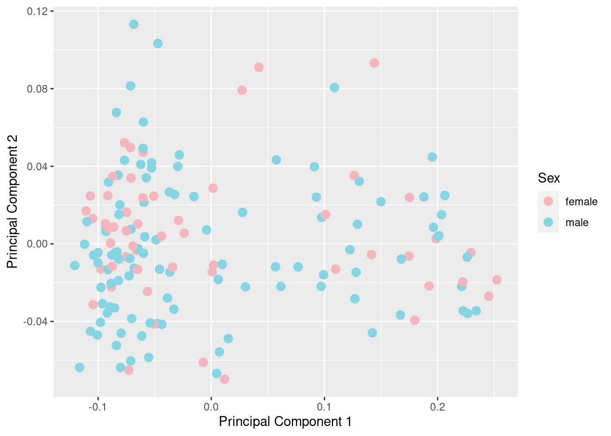
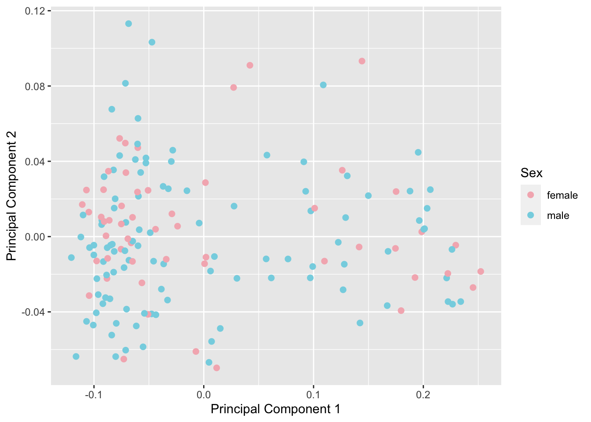
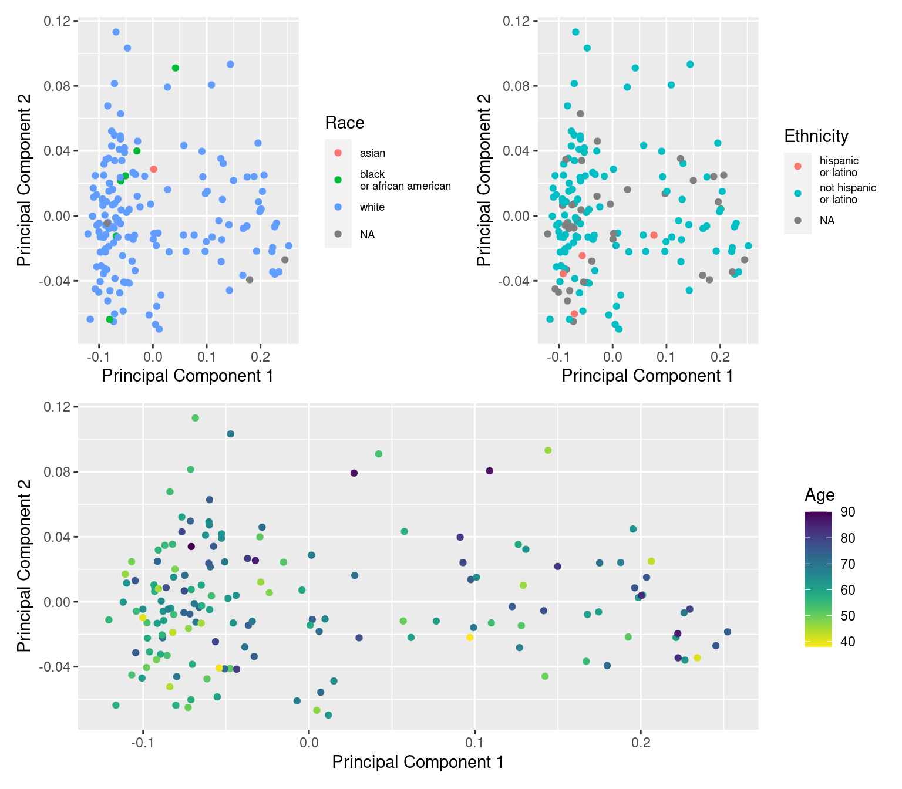
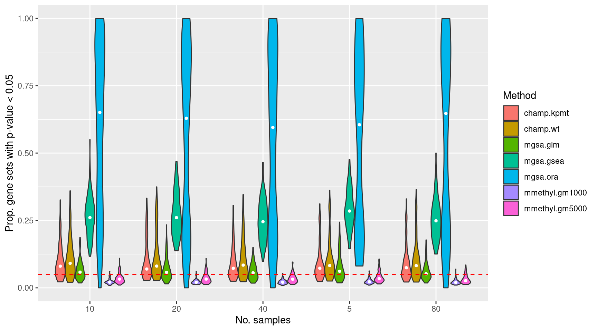

Gene set testing for Illumina HumanMethylation Arrays
Comparing the false discovery rate of different methods
Jovana Maksimovic, Alicia Oshlack and Belinda Phipson
May 19, 2020
Last updated: 2020-05-19
Checks: 7 0
Knit directory: methyl-geneset-testing/
This reproducible R Markdown analysis was created with workflowr (version 1.6.2). The Checks tab describes the reproducibility checks that were applied when the results were created. The Past versions tab lists the development history.
Great! Since the R Markdown file has been committed to the Git repository, you know the exact version of the code that produced these results.
Great job! The global environment was empty. Objects defined in the global environment can affect the analysis in your R Markdown file in unknown ways. For reproduciblity it’s best to always run the code in an empty environment.
The command set.seed(20200302) was run prior to running the code in the R Markdown file. Setting a seed ensures that any results that rely on randomness, e.g. subsampling or permutations, are reproducible.
Great job! Recording the operating system, R version, and package versions is critical for reproducibility.
Nice! There were no cached chunks for this analysis, so you can be confident that you successfully produced the results during this run.
Great job! Using relative paths to the files within your workflowr project makes it easier to run your code on other machines.
Great! You are using Git for version control. Tracking code development and connecting the code version to the results is critical for reproducibility.
The results in this page were generated with repository version 63b0011. See the Past versions tab to see a history of the changes made to the R Markdown and HTML files.
Note that you need to be careful to ensure that all relevant files for the analysis have been committed to Git prior to generating the results (you can use wflow_publish or wflow_git_commit). workflowr only checks the R Markdown file, but you know if there are other scripts or data files that it depends on. Below is the status of the Git repository when the results were generated:
Ignored files:
Ignored: .Rhistory
Ignored: .Rproj.user/
Ignored: code/.job/
Ignored: code/old/
Ignored: data/
Ignored: output/FDR-analysis/
Ignored: output/compare-methods/
Ignored: output/random-cpg-sims/
Note that any generated files, e.g. HTML, png, CSS, etc., are not included in this status report because it is ok for generated content to have uncommitted changes.
These are the previous versions of the repository in which changes were made to the R Markdown (analysis/fdrAnalysis.Rmd) and HTML (docs/fdrAnalysis.html) files. If you’ve configured a remote Git repository (see ?wflow_git_remote), click on the hyperlinks in the table below to view the files as they were in that past version.
| File | Version | Author | Date | Message |
|---|---|---|---|---|
| Rmd | 63b0011 | Jovana Maksimovic | 2020-05-19 | wflow_publish(c(“analysis/exploreArrayBias450.Rmd”, “analysis/exploreArrayBiasEPIC.Rmd”, |
| html | 7af677c | Jovana Maksimovic | 2020-04-17 | Build site. |
| Rmd | 0fec41a | Jovana Maksimovic | 2020-04-17 | Completed repeat of FDR analysis using TCGA data |
| Rmd | f42dc82 | JovMaksimovic | 2020-04-14 | Updated all FDR analysis code. |
| Rmd | 1ea3283 | JovMaksimovic | 2020-04-14 | Updated null analysis with KIRC TCGA data |
library(here)
library(minfi)
library(paletteer)
library(limma)
library(reshape2)
library(missMethyl)
library(ggplot2)
library(glue)
library(tibble)
library(dplyr)
library(curatedTCGAData)
library(MultiAssayExperiment)
library(TCGAutils)
library(DMRcate)
library(patchwork)
source(here("code/utility.R"))Load data
We are using publicly available kidney clear cell carcinoma (KIRC) 450k data from The Cancer Genome Atlas (TCGA). We are using only the normal samples to look at false discovery rate control by various methylation gene set testing methods.
Download the data using the curatedTCGAData Bioconductor package and then extract the normal samples. The data seems to have already been normalised(?) so we will only remove poor probes (>1 NA), SNP, multi-mapping and sex-chromosome probes.
kirc <- curatedTCGAData(diseaseCode = "KIRC", assays = "Methylation_methyl450",
dry.run = FALSE)
kirc <- splitAssays(kirc, c("11")) # extract only the normal samples
exp <- experiments(kirc)[[1]]
meta <- colData(kirc)
betas <- as.matrix(assay(exp))
colnames(betas) <- substr(colnames(betas), 1, 12)
m <- match(colnames(betas), meta$patientID)
meta <- meta[m, ]
head(meta[, 1:5])betasNoNA <- betas[rowSums(is.na(betas)) == 0, ]
mds <- plotMDS(betasNoNA, gene.selection = "common", plot = FALSE)
dat <- tibble(x = mds$x, y = mds$y, gender = meta$gender)
ggplot(dat, aes(x = x, y = y, colour = gender)) +
geom_point() +
labs(x = "Principal Component 1", y = "Principal Component 2",
colour = "Gender")
| Version | Author | Date |
|---|---|---|
| 7af677c | Jovana Maksimovic | 2020-04-17 |
betasFlt <- rmSNPandCH(betasNoNA, rmXY = TRUE, rmcrosshyb = TRUE)
mds <- plotMDS(betasFlt, gene.selection = "common", plot = FALSE)
dat <- tibble(x = mds$x, y = mds$y, gender = meta$gender)
ggplot(dat, aes(x = x, y = y, colour = gender)) +
geom_point() +
labs(x = "Principal Component 1", y = "Principal Component 2",
colour = "Gender")
| Version | Author | Date |
|---|---|---|
| 7af677c | Jovana Maksimovic | 2020-04-17 |
dat$age <- meta$years_to_birth
dat$race <- sub(" or", "\nor", meta$race)
dat$ethnicity <- sub(" or", "\nor", meta$ethnicity)
a <- ggplot(dat, aes(x = x, y = y, colour = age)) +
geom_point() +
labs(x = "Principal Component 1", y = "Principal Component 2",
colour = "Age") +
viridis::scale_color_viridis(direction = -1)
b <- ggplot(dat, aes(x = x, y = y, colour = race)) +
geom_point() +
labs(x = "Principal Component 1", y = "Principal Component 2",
colour = "Race") +
theme(legend.text = element_text(size = 7))
c <- ggplot(dat, aes(x = x, y = y, colour = ethnicity)) +
geom_point() +
labs(x = "Principal Component 1", y = "Principal Component 2",
colour = "Ethnicity") +
theme(legend.text = element_text(size = 7))
(b + c) / a
| Version | Author | Date |
|---|---|---|
| 7af677c | Jovana Maksimovic | 2020-04-17 |
dat <- as_tibble(melt(betasFlt))
colnames(dat) <- c("cpg", "ID", "beta")
p <- ggplot(dat, aes(x = beta)) +
geom_line(aes(color = ID), stat="density", size=0.5, alpha=0.5,
show.legend = FALSE)
p + labs(x = "Beta value", y = "Density")
FDR analysis
Run 100 null simulations comparing 5, 10, 20, 40, 80 randomly selected samples per “group”. There should be no significant differential methylation between the groups as the data contains no signal. Consequently, we expect about 5% false gene set discoveries across the 100 simulations from methods that are “holding their size”. We will compare gometh (with top 1000 and 5000 ranked CpGs selected), MethylGSA:GLM, MethylGSM:ORA, MethylGSA:GSEA and ChAMP:ebGSEA for the complete list of BROAD gene sets provided in the ChAMP package.
outFile <- here("data/TCGA.KIRC.rds")
if(!file.exists(outFile)){
saveRDS(betasFlt, file = outFile)
}Load the results of the FDR simulations.
inFile <- here("output/FDR-analysis/FDR-analysis.rds")
if(file.exists(inFile)) dat <- as_tibble(readRDS(inFile))The plots below shows that MethylGSA-ORA does not control the false discovery rate very well as the median proportion of p-value 0.05 for the 100 simulations is greater than 0.5. MethylGSA-GSEA does better, although its median false discovery rate is still relatively high at around 0.25. MethylGSA-GLM has good false discovery rate control with median FDR at around 0.05. ChAMP-ebGSEA is only slightly anti-conservative using both the wicox test (WT) and known population median test (KPMT) with a median FDR at around 0.06-0.08. MissMethyl-gometh is very consistent although somewhat conservative with a median FDR at around 0.02-0.03.
dat %>% group_by(simNo, sampleNo, method) %>%
summarise(psig = sum(pvalue < 0.05)/length(pvalue)) -> psigData
p <- ggplot(psigData, aes(x = sampleNo, y = psig, fill = method)) +
geom_violin(scale = "width", width = 0.8)
p + stat_summary(geom = "point", size = 1, color = "white",
position = position_dodge(0.8),
show.legend = FALSE, fun = median) +
geom_hline(yintercept=0.05, linetype="dashed", color = "red") +
labs(y="Prop. gene sets with p-value < 0.05", x="No. samples",
fill="Method")
sessionInfo()R version 3.6.1 (2019-07-05)
Platform: x86_64-pc-linux-gnu (64-bit)
Running under: CentOS Linux 7 (Core)
Matrix products: default
BLAS: /config/RStudio/R/3.6.1/lib64/R/lib/libRblas.so
LAPACK: /config/RStudio/R/3.6.1/lib64/R/lib/libRlapack.so
locale:
[1] LC_CTYPE=en_AU.UTF-8 LC_NUMERIC=C
[3] LC_TIME=en_AU.UTF-8 LC_COLLATE=en_AU.UTF-8
[5] LC_MONETARY=en_AU.UTF-8 LC_MESSAGES=en_AU.UTF-8
[7] LC_PAPER=en_AU.UTF-8 LC_NAME=C
[9] LC_ADDRESS=C LC_TELEPHONE=C
[11] LC_MEASUREMENT=en_AU.UTF-8 LC_IDENTIFICATION=C
attached base packages:
[1] stats4 parallel stats graphics grDevices utils datasets
[8] methods base
other attached packages:
[1] DMRcatedata_2.2.1 ExperimentHub_1.12.0
[3] AnnotationHub_2.18.0 BiocFileCache_1.10.2
[5] dbplyr_1.4.2 rhdf5_2.30.1
[7] patchwork_1.0.0 DMRcate_2.0.7
[9] TCGAutils_1.6.2 curatedTCGAData_1.8.1
[11] MultiAssayExperiment_1.12.6 dplyr_0.8.5
[13] tibble_2.1.3 glue_1.4.1
[15] ggplot2_3.3.0 missMethyl_1.20.4
[17] reshape2_1.4.3 limma_3.42.2
[19] paletteer_1.1.0 minfi_1.32.0
[21] bumphunter_1.26.0 locfit_1.5-9.1
[23] iterators_1.0.12 foreach_1.5.0
[25] Biostrings_2.54.0 XVector_0.24.0
[27] SummarizedExperiment_1.16.1 DelayedArray_0.12.3
[29] BiocParallel_1.20.1 matrixStats_0.56.0
[31] Biobase_2.46.0 GenomicRanges_1.38.0
[33] GenomeInfoDb_1.22.1 IRanges_2.20.2
[35] S4Vectors_0.24.4 BiocGenerics_0.32.0
[37] here_0.1 workflowr_1.6.2
loaded via a namespace (and not attached):
[1] rappdirs_0.3.1
[2] rtracklayer_1.44.4
[3] R.methodsS3_1.7.1
[4] pkgmaker_0.27
[5] tidyr_1.0.3
[6] acepack_1.4.1
[7] bit64_0.9-7
[8] knitr_1.28
[9] R.utils_2.9.0
[10] data.table_1.12.8
[11] rpart_4.1-15
[12] RCurl_1.95-4.12
[13] GEOquery_2.54.1
[14] AnnotationFilter_1.8.0
[15] GenomicFeatures_1.36.4
[16] preprocessCore_1.48.0
[17] RSQLite_2.1.2
[18] bit_1.1-14
[19] xml2_1.3.2
[20] httpuv_1.5.2
[21] assertthat_0.2.1
[22] IlluminaHumanMethylation450kmanifest_0.4.0
[23] viridis_0.5.1
[24] IlluminaHumanMethylationEPICanno.ilm10b4.hg19_0.6.0
[25] xfun_0.13
[26] hms_0.5.3
[27] evaluate_0.14
[28] promises_1.1.0
[29] scrime_1.3.5
[30] progress_1.2.2
[31] readxl_1.3.1
[32] DBI_1.0.0
[33] htmlwidgets_1.3
[34] reshape_0.8.8
[35] purrr_0.3.4
[36] backports_1.1.7
[37] permute_0.9-5
[38] annotate_1.62.0
[39] biomaRt_2.42.1
[40] vctrs_0.3.0
[41] ensembldb_2.8.0
[42] withr_2.1.2
[43] Gviz_1.28.3
[44] BSgenome_1.52.0
[45] checkmate_1.9.4
[46] GenomicAlignments_1.20.1
[47] prettyunits_1.0.2
[48] mclust_5.4.6
[49] cluster_2.1.0
[50] GenomicDataCommons_1.10.0
[51] lazyeval_0.2.2
[52] crayon_1.3.4
[53] genefilter_1.68.0
[54] edgeR_3.26.8
[55] pkgconfig_2.0.3
[56] labeling_0.3
[57] nlme_3.1-147
[58] ProtGenerics_1.16.0
[59] palr_0.2.0
[60] nnet_7.3-12
[61] pals_1.6
[62] rlang_0.4.6
[63] lifecycle_0.2.0
[64] registry_0.5-1
[65] dichromat_2.0-0
[66] cellranger_1.1.0
[67] rprojroot_1.3-2
[68] rngtools_1.4
[69] IlluminaHumanMethylation450kanno.ilmn12.hg19_0.6.0
[70] base64_2.0
[71] Matrix_1.2-18
[72] Rhdf5lib_1.6.1
[73] base64enc_0.1-3
[74] whisker_0.4
[75] viridisLite_0.3.0
[76] oompaBase_3.2.9
[77] bitops_1.0-6
[78] R.oo_1.22.0
[79] blob_1.2.0
[80] DelayedMatrixStats_1.8.0
[81] doRNG_1.7.1
[82] stringr_1.4.0
[83] nor1mix_1.3-0
[84] readr_1.3.1
[85] IlluminaHumanMethylationEPICmanifest_0.3.0
[86] scales_1.1.1
[87] memoise_1.1.0
[88] magrittr_1.5
[89] plyr_1.8.6
[90] bibtex_0.4.2
[91] zlibbioc_1.30.0
[92] compiler_3.6.1
[93] RColorBrewer_1.1-2
[94] illuminaio_0.28.0
[95] Rsamtools_2.0.1
[96] DSS_2.34.0
[97] htmlTable_1.13.2
[98] Formula_1.2-3
[99] MASS_7.3-51.6
[100] tidyselect_0.2.5
[101] stringi_1.4.6
[102] yaml_2.2.1
[103] askpass_1.1
[104] latticeExtra_0.6-28
[105] grid_3.6.1
[106] VariantAnnotation_1.30.1
[107] tools_3.6.1
[108] ruv_0.9.7.1
[109] rstudioapi_0.11
[110] foreign_0.8-72
[111] git2r_0.27.1
[112] bsseq_1.22.0
[113] gridExtra_2.3
[114] farver_2.0.3
[115] digest_0.6.25
[116] BiocManager_1.30.10
[117] shiny_1.3.2
[118] quadprog_1.5-8
[119] Rcpp_1.0.4.6
[120] siggenes_1.60.0
[121] BiocVersion_3.10.1
[122] later_1.0.0
[123] org.Hs.eg.db_3.8.2
[124] httr_1.4.1
[125] AnnotationDbi_1.46.1
[126] biovizBase_1.32.0
[127] colorspace_1.4-1
[128] rvest_0.3.5
[129] XML_3.98-1.20
[130] fs_1.4.1
[131] splines_3.6.1
[132] statmod_1.4.32
[133] rematch2_2.1.0
[134] multtest_2.40.0
[135] mapproj_1.2.6
[136] jcolors_0.0.4
[137] xtable_1.8-4
[138] jsonlite_1.6.1
[139] scico_1.1.0
[140] R6_2.4.1
[141] Hmisc_4.2-0
[142] pillar_1.4.4
[143] htmltools_0.4.0
[144] mime_0.9
[145] interactiveDisplayBase_1.22.0
[146] beanplot_1.2
[147] codetools_0.2-16
[148] maps_3.3.0
[149] lattice_0.20-41
[150] curl_4.3
[151] BiasedUrn_1.07
[152] gtools_3.8.1
[153] GO.db_3.8.2
[154] openssl_1.4.1
[155] survival_2.44-1.1
[156] rmarkdown_2.1
[157] methylumi_2.30.0
[158] munsell_0.5.0
[159] GenomeInfoDbData_1.2.1
[160] HDF5Array_1.14.4
[161] gtable_0.3.0